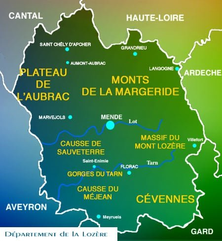
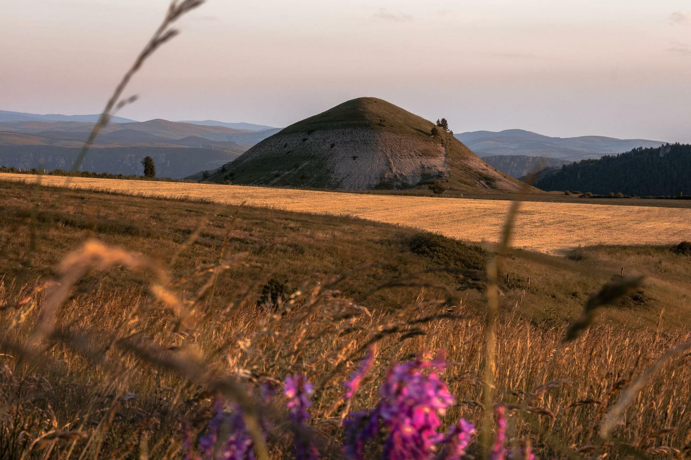
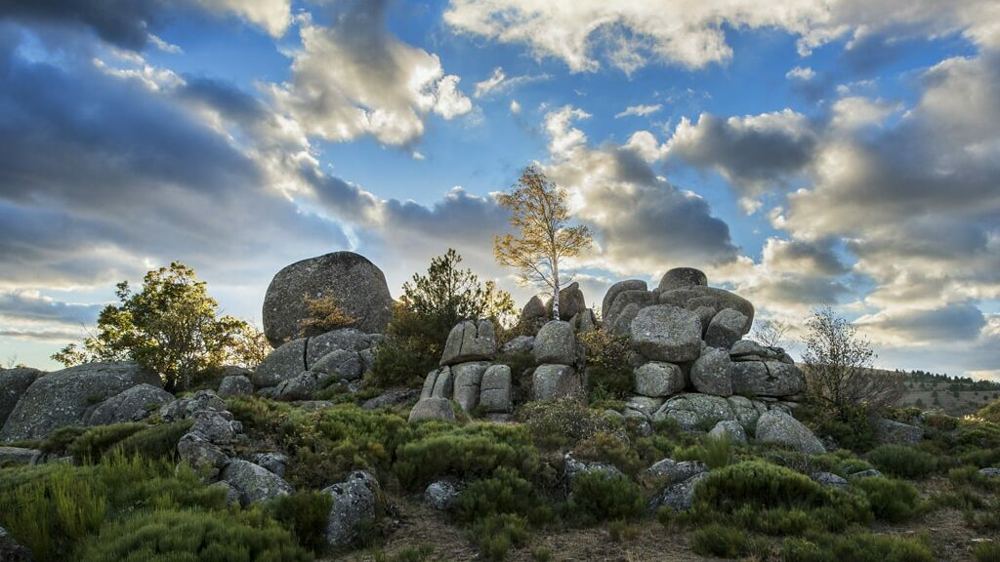

L’air libre du plateau
Entre Margeride et Aubrac, la Lozère s’offre en vastes plateaux où la nature respire fort et où le silence devient presque tangible.
Voici une page qui donne envie de partir en Lozère : pas seulement pour ses panoramas, mais pour l’ambiance des villages, le calme des plateaux et l’histoire qui se raconte au détour d’un sentier.

Entre Margeride et Aubrac, la Lozère s’offre en vastes plateaux où la nature respire fort et où le silence devient presque tangible.

Les gorges, les rivières et les vieux murs racontent une région dont les paysages se mêlent aux histoires locales avec beaucoup de charme.

On vient pour les panoramas, mais on reste pour l’atmosphère : un mélange de nature sauvage et de convivialité discrète.
Parce qu’elle se vit sans artifice : une route qui grimpe, un café dans un village, une marche jusqu’au sommet et une nuit où les étoiles prennent toute la place.
Histoire et terroir se croisent partout : les vieux chemins de transhumance, les châtaigneraies, les hameaux où le temps passe plus lentement. C’est une région qui respire les saisons et qui garde ce qu’elle a de plus simple.
Tu n’auras pas seulement une carte postale : tu auras l’envie de revenir pour un trajet en voiture, un instant de silence près du Tarn, ou un déjeuner partagé dans un petit bistrot serré.